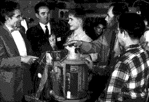
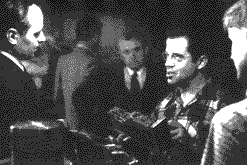
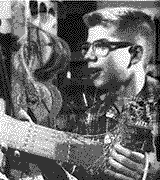
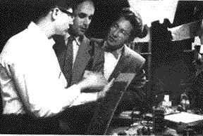
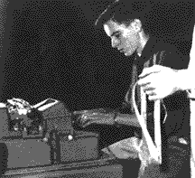
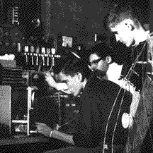

1996
(Soviet Scientists and American Students)

(Aleksandr M. Letov, Alexei G. Ivanyenko, Dave Lescohier,  Carl Ellison, Alexandr M. Petrovski, Mr. Boyd.)
Carl Ellison, Alexandr M. Petrovski, Mr. Boyd.)
In September 1959, there was a meeting in Chicago of the International Federation for Automatic Control. Mr. Boyd invited the Russian engineers attending the meeting to a barbecue in his back yard in Clarendon Hills. This was during the Cold War, post-Sputnik, Khruschev era, and he had to get special State Department permission for them to leave the downtown area. (Carl Ellison thinks the date was Thursday, Sept 17, 1959.)
The United States Information Agency used to produce a glossy propaganda magazine, sort of like LIFE without ads, in Russian, called America Illustrated. An article about the Russian engineers' visit appeared in Number 46 (no date). My Russian isn't up to translating the article; I do know (thanks to Dr. Victor Olchanski) that all three of the Russian engineers in the top picture were in the Russian Academy of Sciences. Olchanski wrote me (in 1996):
Professor Letov later was Deputy Director of the International Institute for Applied Systems Analysis in Vienna, Austria. Deceased in about 1975.
Professor Ivanyenko worked in the Ukrainian Institute of Cybernetics, Kiev.
Professor Petrovski was a student of Professor Letov and my teacher. He worked in applications of the theory of control under uncertainty in the Institute of Control Sciences, Moscow. One direction of his work was medical cybernetics. Deceased in 1993.

Ivanyenko, Mr. Boyd.

Garry Boyd wth drum amp.

Charles "Butch" Erhardt, Petrovski, Letov.

Carl Ellison at the Flexowriter.

Ellison at the scope, Erhardt, Lescohier
How I Got Started in Computers: building computers in Mr. Boyd's basement.
Hinsdale Doings story on Boyd's basement.
Photos by Tommy Wadelton, Black Star
Copyright (c) 1996 by Tom Van Vleck